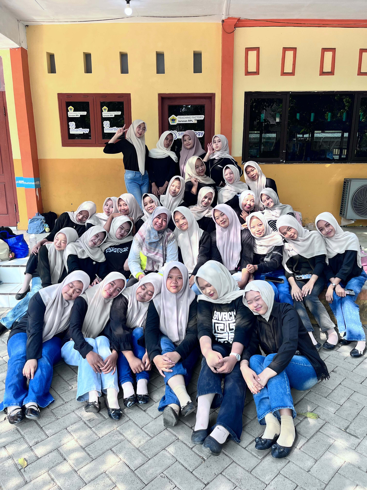
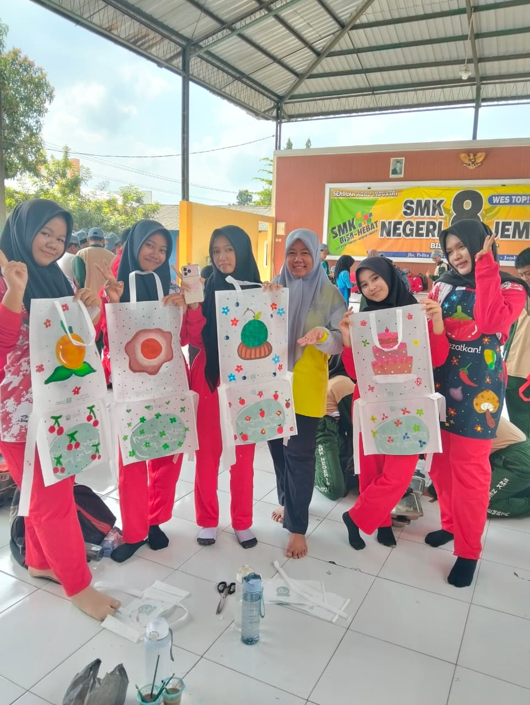

CERITA DARI SEKOLAH
KEHIDUPAN BERLIAN
DI SEKOLAH
Hari-hari di sekolah diisi dengan kebersamaan, kegiatan yang beragam, dan pengalaman berorganisasi bersama teman-teman.
JELAJAHI CERITACERITA DI BALIK SETIAP FOTO
MY SCHOOL STORIES
Momen kebersamaan dan pengalaman yang membuat perjalanan sekolah semakin berarti.

Berlian dan Teman-Teman
Kebersamaan, saling mendukung, dan menjaga hubungan baik menjadikan hari-hari di sekolah lebih berkesan.

Aktif di Kegiatan Sekolah
Berpartisipasi dalam kegiatan sekolah untuk belajar, bekerja sama, dan mengembangkan diri.

Aktif Mengikuti Organisasi MPK
Belajar menyampaikan aspirasi, bekerja sama, dan bertanggung jawab melalui organisasi MPK.
Setiap pengalaman di sekolah adalah bagian dari cerita yang terus bertumbuh.
LIHAT AKTIVITAS ↗